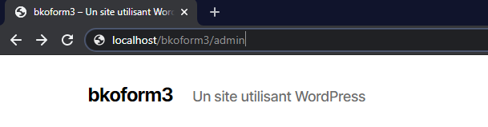

Mes projets
La société BULKO, dans laquelle j’ai effectué mes deux stages, est une agence de communication qui réalise et qui maintient des solutions de sites web pour les professionnels, en tant que prestataire de service.
Un des développeurs de la société a développé un module Wordpress dont la fonction est de générer un formulaire une page web choisie. Ce module, qui a été développé en avril 2018, est désormais obsolète et ne répond plus aux besoins de la société en matière de sécurité.
Mon employeur me demande de le mettre à jour afin qu’il puisse répondre aux besoins actuels et que les clients puissent l’installer et l’utiliser en toute sécurité.
Dans cette situation professionnelle, j’ai eu pour mission de à mettre à jour un module Wordpress obsolète. Ce module Wordpress, dans ses premières versions, a été développé dans le but d’automatiser le processus de création de formulaires pour les sites Wordpress, tout en étant sécurisé par un système de captcha pour éviter le spam par des robots. Il suffit d’utiliser un tag simplifié dans un bloc de contenu, et le formulaire sera généré automatiquement sur la page correspondante. Le module va stocker les données récoltées via les formulaires dans la base de données liée au site, et les envoie également par mail à une ou plusieurs adresses préalablement spécifiées dans l’interface d’administration du module. Jusqu’ici, le module fonctionnait parfaitement, mais le système de captcha utilisé était Google reCAPTCHA v2. Le problème est que Google a mis à jour son système de vérification par captcha, et est récemment passé sous Google reCAPTCHA v3, ce qui rend le module obsolète en matière de sécurité. Mon tuteur, responsable du développement initial du module, a tenté de mettre à jour le système de captcha avec reCAPTCHA v3, mais il possède un mode de fonctionnement entièrement différent par rapport à reCAPTCHA v2, ce qui le rend inutilisable avec le module. Pour le rendre compatible, il fallait redévelopper entièrement le module en partant de zéro. Estimant que cela prendrait trop de temps, mon tuteur a décidé de me confier la mission de mettre à jour le module, mais en supprimant entièrement le système de captcha et en ajoutant un système de sécurité plus simple, qui fonctionnera en JavaScript avec AJAX. J’ai utilisé Git pour mettre à jour mon travail au fur-et-à-mesure que j’avançais dans cette mission, et pour pouvoir revenir en arrière si besoin.
Préface : comment accéder à l'interface d'administration du site de test, et comment générer un formulaire via le plugin
(Notez que le site de test et le plugin ne fonctionneront que lorsque vous aurez importé la base de données sur votre SGBD local).
Une fois sur la page d'accueil du site, ajoutez "admin" à l'URL et accédez à la page.

Vous êtes désormais sur la page de connexion. Entrez comme login "adminBko" et comme mot de passe "pablo33".
Vous avez maintenant accès à l'interface d'adminstration. Cliquez sur "BkoFormidable" dans le menu de gauche.
Vous voilà sur le menu du plugin. Vous pouvez naviguer sur les différents formulaires HTML générables ou sur la configuration du plugin.
Pour générer un des formulaires sur une page, copiez le tag correspondant et collez-le dans un contenu d'une page :
Enregistrez, puis allez sur la page correspondante. Le formulaire est désormais généré.
A1.4.1 Participation à un projet
A1.4.2 Évaluation des indicateurs de suivi d’un projet et justification des écarts
A2.2.1 Suivi et résolution d'incidents
A4.1.2 Conception ou adaptation de l’interface utilisateur d’une solution applicative
A4.1.3 Conception ou adaptation d’une base de données
A4.1.7 Développement, utilisation ou adaptation de composants logiciels
A4.1.8 Réalisation des tests nécessaires à la validation d’éléments adaptés ou développés
A4.2.1 Analyse et correction d’un dysfonctionnement, d’un problème de qualité de service ou de sécurité
A4.2.3 Réalisation des tests nécessaires à la mise en production d’éléments mis à jour